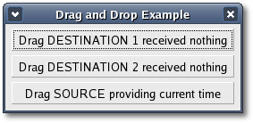

Drag data has the following
properties:
- a Gtk::TargetEntry for each target a destination widget
accepts
or a source widget provides.
- a Gdk::DragAction type (Gdk::ACTION_COPY or
Gdk::ACTION_MOVE).
- a Sent and received data format type.
The first thing you need to do when setting up a destination or source
widget is construct a Gtk::TargetEntry (for a single target) or a
vector
of Gtk::TargetEntry (for multiple targets).
You can create a new TargetEntry object with one of the following
constructors:
TargetEntry();
TargetEntry(const String& target_name, unsigned int unique_id,
Gtk::TargetFlagsField drag_flags = 0);
The first constructor creates an empty TargetEntry. The second
constructor creates a target entry with the specified name and unique
id. The 'target_name' argument is a string corresponding to the target
atom and 'unique_id' is the unique integer id. The 'drag_flags'
argument
is only used when implementing Drag and Drop. It restricts the validity
of the corresponding target to the same application or the same widget,
and can be one or more of the
values
defined in the Gtk::TargetFlags enum:
- TARGET_SAME_APP
- TARGET_SAME_WIDGET
There are a number of possible drag actions that can be applied to the
data exchanged through drag-and-drop, and are defined in the
Gdk::DragAction enum:
- ACTION_COPY - data provided by the source will be copied to
the destination widget.
- ACTION_MOVE - data provided by the source will be moved to
the
destination widget.
- ACTION_LINK - the destination widget will create a link to
the
provided data, rather than copy its contents.
- ACTION_PRIVATE - the destination widget is free to do
anything
with the copy of the data provided.
- ACTION_ASK - allows the destination widget to ask the user
which
action should be performed.
If you create an empty TargetEntry, you can set its target_name and
unique_id by calling the Gtk::TargetEntry method:
void set(const String& target_name,
unsigned int unique_id, Gtk::TargetFlagsField drag_flags = 0);
Drag actions are quite obvious, they specify if the widget can drag
with the specified action(s). A Gdk::ACTION_COPY would be a typical
drag-and-drop without the source data being deleted while
Gdk::ACTION_MOVE would be just like Gdk::ACTION_COPY but the source
data
will be 'suggested' to be deleted after the received signal handler is
called. You may want to look into the additional drag actions including
Gdk::ACTION_LINK when you get to more advanced levels of drag-and-drop.
Sent and received data format types (selection target) come into play
only in your request and received data handler methods. The term
selection target is somewhat misleading. It is a term adapted from GTK+
selection (cut, copy and paste). What 'selection target' actually means
is
the data's format type (i.e. a Gdk::Atom, integer, or string) that is
being sent or received. Your request data handler method needs to
specify the type (selection target) of data that it sends out and your
received data handler needs to handle the type (selection target) of
data received.
Defining a
Destination Widget
To turn a widget into a drag-and-drop destination call the one of the
following methods:
void
drag_dest_set(Gtk::DestDefaultsField flags, const
Gtk::TargetEntry& target, Gdk::DragActionField actions);
void
drag_dest_set(Gtk::DestDefaultsField flags, const
std::vector<Gtk::TargetEntry>& targets, Gdk::DragActionField
actions);
The 'flags' argument defines the automatic behaviour options of
the destination widget and can be one or more values from the
Gtk::DestDefaults enum OR'd together:
- DEST_DEFAULT_MOTION - during a drag over this widget will
check if
the
drag matches this widget's list of possible targets and actions.
- DEST_DEFAULT_HIGHLIGHT - will draw a highlight on this
widget as long as
a drag is over this widget and the widget drag format and action are
acceptable.
- DEST_DEFAULT_DROP - checks if the drag matches this
widget's list of
possible targets and actions. If so, it calls
Gtk::Widget::drag_data_get() for you.
- DEST_DEFAULT_ALL - specifies that all default actions
should be
taken. This is an appropriate choice for most applications.
The 'actions' argument can be one or more values from the
Gdk::DragAction enum above, OR'd together. The first method is
used to define a single target. The second method is used to define
multiple targets.
To remove drag-and-drop functionality from a destination widget call:
void
drag_dest_unset();
To be able to receive data from a drag-and-drop source you must either
connect the destination widget to the "drag_data_received"
signal
or derive a destination widget from an
existing widget and override its Gtk::WidgetSignals
on_drag_data_received()
virtual
signal handler.
You can connect to the "drag_data_received" signal like this:
widget->signal_drag_data_received().connect(sigc::mem_fun(this,
&MyClass::drag_data_received_handler));
where the drag_data_received handler has the following
prototype:
void
drag_data_received_handler(Gdk::DragContext& context, int
x, int y,
const Gtk::SelectionData& data, unsigned int
info, unsigned int time);
The 'context' argument is the Gtk::DragContext for the current
drag-and-drop event; 'x' and 'y' are the x and y positions of the mouse
pointer relative to the widget; 'data' is the Gtk::SelectionData object
that contains all the information about the data received; 'info' is
the info integer that was set when the target was registered and 'time'
is the time of the conversion request.
During a drag-and-drop operation the destination widget is sent the
following signals:
- drag_leave
- drag_motion
- drag_drop
- drag_data_received
Defining a
Source
Widget
To define a widget as a drag-and-drop source call one of the following
methods:
void
drag_source_set(Gdk::ModifierTypeField start_button_mask, const
Gtk::TargetEntry& target, Gdk::DragActionField actions);
void drag_source_set(Gdk::ModifierTypeField start_button_mask, const
std::vector<Gtk::TargetEntry>& targets, Gdk::DragActionField
actions);
The 'start_button_mask' defines which mouse button has to be
pressed to start the drag action. It can be one of the values in the
Gdk::ModifierType enum but only the following values are useful:
- BUTTON1_MASK - the left mouse button.
- BUTTON2_MASK - the middle mouse button.
- BUTTON3_MASK - the right mouse button.
- BUTTON4_MASK - a possible fourth mouse button.
- BUTTON5_MASK - a possible fifth mouse button.
The 'actions' argument can be one or more values from the
Gdk::DragAction enum above, OR'd together. The TargetEntry arguments
describe the target(s) the drag will support.The first method is
used to define a single target. The second method is used to define
multiple targets.
To remove drag-and-drop functionality from a source widget call:
void drag_source_unset();
A custom drag icon can be used to represent the data being dragged. To
set the drag icon for the source widget call one of the following
Gtk::Widget methods:
void drag_source_set_icon(Gdk::Colormap
*colormap, Gdk::Pixmap *pixmap, Gdk::Bitmap *mask);
void drag_source_set_icon_pixbuf(Gdk::Pixbuf& pixbuf);
void drag_source_set_icon_stock(const Gtk::StockId& stock_id);
The first method sets the icon that will be used for drags from the
widget from a pixmap and mask, the second sets the icon from a pixbuf
and the third sets the icon from a stock image.
To receive notification that a drag-and-drop operation has started and
ended you can either connect to the "drag_begin" and "drag_end"
signals or derive your source widget from an existing widget and
override its Gtk::WidgetSignals on_drag_begin() and on_drag_end()
virtual signal handlers.
You can connect to the "drag_begin" and "drag_end"
signals like this:
widget->signal_drag_begin().connect(sigc::mem_fun(this,
&MyClass::drag_begin_handler));
widget->signal_drag_end().connect(sigc::mem_fun(this,
&MyClass::drag_end_handler));
where the 'drag_begin_handler' and the 'drag_end_handler'
have the following prototypes:
void
MyClass::drag_begin_handler(Gdk::DragContext& context);
void
MyClass::drag_end_handler(Gdk::DragContext& context);
The 'context' argument is the Gdk::Context for the drag event. After a
valid drop, the data of the first target supported by the
destination widget is requested from the source widget. To provide the
data that corresponds to the requested target you will either have to
connect to the "drag_data_get" signal or derive your source
widget from an existing widget and override its Gtk::WidgetSignal
on_drag_data_get()
virtual signal handler.
You can connect to the "drag_data_get" signal like this:
widget->signal_drag_data_get().connect(sigc::mem_fun(this,
&MyClass::drag_data_get_handler));
where the 'drag_data_get_handler' has the following prototype:
void
drag_data_get_handler(Gdk::DragContext& context,
Gtk::SelectionData& data, unsigned int info, unsigned int time);
The 'context' argument is the Gdk::DragContext for the drag; 'data' is
a reference to the SelectionData object that needs to be filled in to
provide the requested data; 'info' is the unique id that was set when
the target
was registered and 'time' is the time the request occurred.
To provide the data you will need to fill in the fields of the
SelectionData object by calling one of the Gtk::SelectionData set
methods:
void
set(Gdk::Atom type, int format, const void *data, int
length);
bool set_text(const String& str);
These methods should only be called from a drag-and-drop handler
callback.
The 'type' argument is an atom that describes the 'data' provided and
the 'format' is
the number of bits required to store one element of the target type.
Usually it will be 8 for a character or 32 for an integer. The most
commonly used target types are: ATOM, COMPOUND_TEXT, INTEGER and
STRING. This method takes care of properly making a copy of the data so
that you don't have to worry about keeping it around. The length
argument is the data length. The data should
be null-terminated.
For convenience, the set_text() method sets the contents of the
selection from a UTF-8 encoded string. The string is converted to the
form determined by the target and true is returned if the selection was
successfully set.
During a drag-and-drop operation the source widget is sent the
following signals:
- drag_begin
- drag_end
- drag_data_get
- drag_data_delete
Drag and Drop Example
This drag-and-drop example creates a window with three buttons, one
drag
source button and two drag destination buttons. The example is based on
the drag-and-drop example in Donna Martin's book "GTK+ Programming in
21
Days".
The header file for the Drag and Drop example is <dnd.hh>:
#include <xfc/main.hh>
#include <xfc/gtk/button.hh>
#include <xfc/gtk/widgetsignals.hh>
#include <xfc/gtk/window.hh>
using namespace Xfc;
class DestinationButton : public Gtk::Button, protected
Gtk::WidgetSignals
{
protected:
virtual void
on_drag_data_received(Gtk::DragContext& context, int x, int y,
const Gtk::SelectionData& data, unsigned int info, unsigned int
event_time);
public:
DestinationButton(const String& label, const
Gtk::TargetEntry& entry);
virtual ~DestinationButton();
};
class SourceButton : public Gtk::Button, protected Gtk::WidgetSignals
{
static std::vector<Gtk::TargetEntry>
target_entries;
String target_html;
String target_string;
protected:
virtual void on_drag_begin(Gtk::DragContext&
context);
virtual void on_drag_end(Gtk::DragContext&
context);
virtual void on_drag_data_get(Gtk::DragContext&
context, Gtk::SelectionData& data, unsigned int info, unsigned int
time);
public:
SourceButton(const String& label);
virtual ~SourceButton();
};
class Window : public Gtk::Window
{
public:
Window();
virtual ~Window();
};
and the source file is <dnd.cc>:
#include "dnd.hh"
#include <xfc/gtk/box.hh>
#include <xfc/gdk/bitmap.hh>
#include <xfc/gdk/color.hh>
#include <iostream>
#include <ctime>
std::vector<Gtk::TargetEntry> SourceButton::target_entries;
enum
{
// Define the info fields for the supported
targets.
TEXT_HTML,
STRING
};
DestinationButton::DestinationButton(const String& label, const
Gtk::TargetEntry& entry)
: Gtk::Button(label),
Gtk::WidgetSignals(this)
{
// Set up this button as a drag destination.
drag_dest_set(Gtk::DEST_DEFAULT_ALL, entry,
Gdk::ACTION_COPY);
signal_drag_data_received().connect(sigc::mem_fun(this,
&DestinationButton::on_drag_data_received));
}
DestinationButton::~DestinationButton()
{
}
void
DestinationButton::on_drag_data_received(Gtk::DragContext& context,
int x, int y, const Gtk::SelectionData& data, unsigned int info,
unsigned int event_time)
{
using namespace std;
// Get current time
time_t now = ::time(0);
struct tm *now_tm = localtime(&now);
char now_string[10];
strftime(now_string, sizeof(now_string), "%T",
now_tm);
// Get button id from enum info
int id = info + 1;
// Set button label to reflect the dropped data
String label = String::format(" Drag DESTINATION %i
received % s data at %s ", id, data.get_target().c_str(), now_string);
set_label(label);
cout << "Destination " << id << ":
Received data for the '" << data.get_target() << "'
target." << endl;
// Print the dropped data to the standard output
switch(info)
{
case TEXT_HTML:
cout << "text/html data =
'" << data.data() << "'" <<endl;
break;
case STRING:
cout << "STRING data = '"
<< data.data() << "'" << endl;
break;
}
}
SourceButton::SourceButton(const String& label)
: Gtk::Button(label),
Gtk::WidgetSignals(this)
{
// Add text/html and STRING targets to the primary
selection.
target_entries.push_back(Gtk::TargetEntry("text/html", TEXT_HTML,
Gtk::TARGET_SAME_APP));
target_entries.push_back(Gtk::TargetEntry("STRING",
STRING));
// Set up this button as a source for a drap
operation
drag_source_set(Gdk::BUTTON1_MASK, target_entries,
Gdk::ACTION_COPY);
// Create a custom icon to be used for the drags
Pointer<Gdk::Bitmap> drag_mask;
Gdk::Pixmap *drag_icon(new
Gdk::Pixmap(Gdk::Colormap::get_system(), "gtk.xpm", &drag_mask));
drag_source_set_icon(Gdk::Colormap::get_system(),
drag_icon, drag_mask);
}
SourceButton::~SourceButton()
{
}
void
SourceButton::on_drag_begin(Gtk::DragContext& context)
{
// Get the current time
time_t now = time(0);
char *now_string = ctime(&now);
// Remove terminating new line character.
now_string[strlen(now_string) - 1] = '\0';
std::cout << "Source: Drag begun..." <<
std::endl;
// Set data strings for the
supported targets
target_html = String::format("<P>It's now
<B>%s</B>.</P>", now_string);
target_string = String::format("It's now %s.",
now_string);
}
void
SourceButton::on_drag_data_get(Gtk::DragContext& context,
Gtk::SelectionData& data, unsigned int info, unsigned int time)
{
std::cout << "Source: Got request for the '"
<< data.get_target() << "' target." << std::endl;
// Fill the Gtk::SelectionData with the values to be
passed to the requesting destination.
switch(info)
{
case TEXT_HTML :
data.set(gdk_atom_intern("text/html", TRUE), 8,
target_html.c_str(), target_html.size());
break;
case STRING :
data.set(gdk_atom_intern("STRING", TRUE), 8,
target_string.c_str(), target_string.size());
break;
}
}
void
SourceButton::on_drag_end(Gtk::DragContext& context)
{
std::cout << "Source: Drag ended!\n" <<
std::endl;
}
Window::Window()
{
set_title("Drag and Drop Example");
Gtk::VBox *vbox = new Gtk::VBox(true, 5);
vbox->set_border_width(5);
add(*vbox);
// Create drag destination button 1
Gtk::TargetEntry entry("text/html", TEXT_HTML);
Gtk::Button *button = new DestinationButton(" Drag
DESTINATION 1 received nothing ", entry);
vbox->pack_start(*button);
// Create drag destination button 2
entry.set("STRING", STRING);
button = new DestinationButton(" Drag DESTINATION 2
received nothing ", entry);
vbox->pack_start(*button);
// Create drag source button
button = new SourceButton(" Drag SOURCE providing
current time ");
vbox->pack_start(*button);
vbox->show_all();
}
Window::~Window()
{
}
int main (int argc, char *argv[])
{
using namespace Main;
init(&argc, &argv);
Window window;
window.signal_destroy().connect(sigc::ptr_fun(&Xfc::Main::quit));
window.show();
run();
return 0;
}
Compiling Drag and Drop
If you compiled and installed XFC yourself, you will find the source
code for Drag-and-Drop in the
<examples/howto/dnd> source directory along with a Makefile. If
XFC came pre-installed, or you installed it from an RPM package, you
will
find the source code in the
</usr/share/doc/xfcui-X.X/examples/howto/dnd> subdirectory. In
this case you will have to create the Makefile yourself (replace X.X
with the
version number of the libXFCui library you have installed).
To create a Makefile for Drag-and-Drop, add the following lines to a
new text
file
and save it using the name "Makefile":
CC = g++
CFLAGS = -Wall -O2
dnd: dnd.cc dnd.hh
$(CC) dnd.cc -o dnd $(CFLAGS) `pkg-config xfcui-X.X
--cflags --libs`
clean:
rm -f *.o dnd
If you cut and paste these lines make sure the whitespace before $(CC)
and rm is a tab character. When
you
compile and run this program you will see the following window appear:

Run the example from a shell. The drag source button registers two
target types "text/html" and "STRING". When the source button receives
the "drag_data_get" signal it fills the Gtk::SelectionData data
field with the string "It's now" followed by the current date and time.
Depending on the requested target the string is either formatted as
html
text or plain text.
Each drag destination button registers only one target type. The first
button registers the "text/html" target type and the second button
registers the "STRING" target type. When a drag-and-drop action occurs
over the first button it requests the string data in html format. When
a
drag-and-drop action occurs over the second button it requests the
string data in plain text format. If a successful drop occurs the
button
label changes to show the time the drop occurred.
You can also try a drag-and-drop action on the gnome-terminal or one of
the many html or text editors to see what happens.